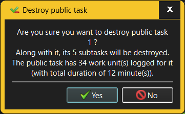

The Destroy Public Task dialog requests confirmation when an attempt is made to destroy an existing Public Task.

When destroying a Public Task, any Work items and Events recorded for that Public Task and all its sub-tasks will be destroyed along with it. The Destroy Public Task dialog will therefore show just how much an impact the Public Task's destruction will have on the recorded work history.
Only someone with Administrator or Manage Public Tasks capabilities is allowed to destroy Public Tasks. However, anyone who can log into a given workspace can see all Public Tasks defined there unless the User is configured to restrict the list of Public Tasks that User can work on.
See also: -